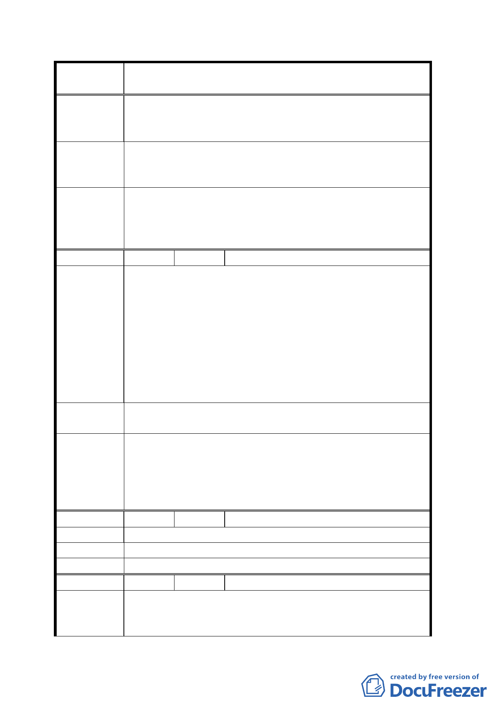

案
名
修訂臺北市士林區商務產業專用區（原士林電機廠）細部
計畫有關土地使用分區管制及事業財務計畫規定案
二、 開發後交通衝擊大，停車問題將造成住戶之痛。尤其
福華路 164 巷將成為其停車場入口，尖峰時間即成停
車塞車點。
一、以停管基金於回饋綠地興建地下停車場。
建 議 辦 法 二、停車場挪撥部分空間供作活動中心使用。
三、慎重規劃交通動線減少對住宅區衝擊。
一、依發展局書面資料士林電機已同意承接公園地下停車
委員會決議
場、區民活動中心整體規劃作業，請本府相關單位積
極配合辦理。
二、有關交通問題請交通局妥善處理。
編 號 ２ 陳情人 李宜娟
一、芝山捷運站只有一個南方出入口，到河堤及三座小橋。
外來消費人口被誤導，找不到商務區或走了很多冤枉
路。一個商務區的成功，以交通方便為最大考量，所
以建議北方應增設出口，如此可以便利大多數居住北
陳情理由
方的天母居民，同時縮短消費者到達時間。
二、「中山北路和德行西路」在上下班會塞車，加上商務區
就更嚴重，所以路邊停車位塗銷，可「增加路線」讓
車子更快離開，相對應在公園地下以民間發包方式經
營停車場。
建
議
辦
法
一、 增設「北方」捷運出入口（芝山站）。
二、 減少路邊停車位增加公園地下停車場。
一、本建議非屬計畫範圍，留供相關單位參考。
二、本建議留供相關單位參考，有關公園地下停車場依發展
委員會決議 局書面資料士林電機已同意承接公園地下停車場、區民
活動中心整體規劃作業，請本府相關單位積極配合辦
理。
編 號 ３ 陳情人 陳輝男
陳情理由
建 議 辦 法 開放式公園保留福華路 164 巷原有停車權益。
委員會決議 有關停車問題應以公園興建地下停車場方式處理。
編 號 ４ 陳情人 葉進亨
本地號以前係華園新村住宅區，前被編為工業區，五十巷
陳 情 理 由 為計畫八米巷，以北為住宅區，以南為工業區，但該巷一
直以沒經費未開通。今士林電機已將被開為商住用途，交
第 3 頁，共 12 頁